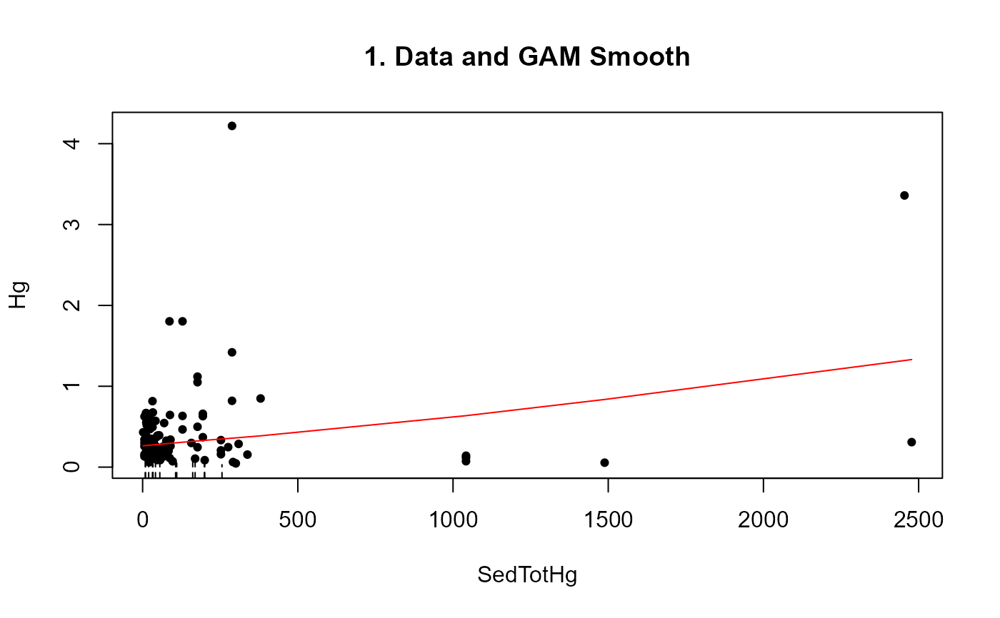

Computes the ATS (Mann-Kendall trend test for censored data) after adjustment of censored data for a covariate.
centrend( y.var, y.cens, x.var, time.var, link = "identity", Smooth = "cs", printstat = TRUE )
| y.var | The column of y (response variable) values plus detection limits |
|---|---|
| y.cens | The column of indicators, where 1 (or |
| x.var | Column of a covariate (not time). |
| time.var | Column of the time variable, either a sequence of days or decimal times, etc. Will be the scale used for time in ATS trend analysis. |
| link | Default = |
| Smooth | Type of smoother used in the GAM. Default is |
| printstat | Logical |
Prints three plots: Y data vs time with GAM Smooth, Residuals from GAM Smooth vs time, and ATS trend line of residuals vs time.
Returns GAM residuals and ATS results on trend test of residuals (intercept, slope, Kendall's tau, p-value for trend)
Default link = identity. The y variables are then used in their original units. Other options are available see cenGAM::tobit1 for more options.
Default Smooth is "cs" for shrinkage cubic regression splines. See mgcv::smooth.terms for other types of smoothing algorithms. '"ts"' is a thin-plate regression spline and is also commonly used.
Helsel, D.R., 2011. Statistics for censored environmental data using Minitab and R, 2nd ed. John Wiley & Sons, USA, N.J.
data(Brumbaugh) Brumbaugh$time=1:nrow(Brumbaugh) with(Brumbaugh,centrend(Hg,HgCen,SedTotHg,time.var=time))#> Trend analysis of Hg adjusted for SedTotHg #> Akritas-Theil-Sen line for censored data #> #> Hg residuals = -0.0493 -4e-04 * time #> Kendall's tau = -0.036 p-value = 0.53998 #>